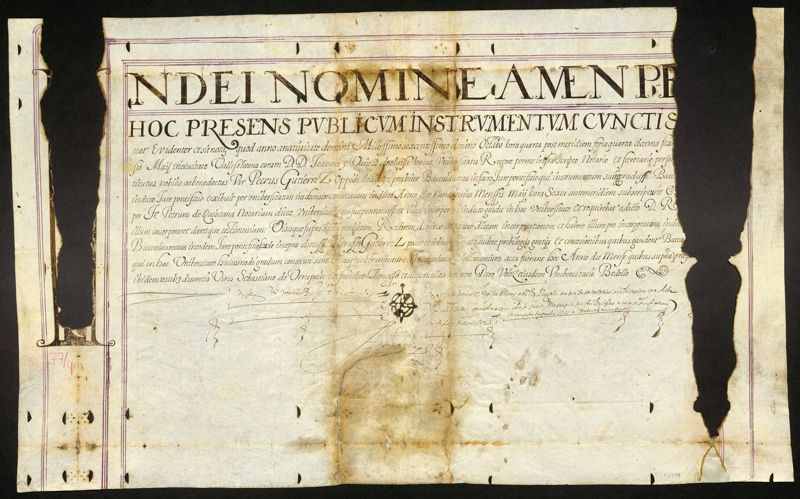

Siglos XVI y XVII: esplendor y crisis
El siglo XVI fue el de las dos grandes iglesias, el vino famoso y una villa de más de novecientos vecinos. El XVII, el de la decadencia. Las ordenanzas, los pleitos y las cuentas de aquellos años cuentan cómo se vivía.
En esta página (7 apartados · 9 min de lectura)
Al terminar el siglo XVI Alaejos tenía más de 900 vecinos, es decir, cabezas de familia (programa de 1954), lo que José Ojeda Nieto calcula en algo más de 4.000 personas (programa de 2004). Era más del doble que hoy. La riqueza venía de la tierra y, sobre todo, del vino: a finales de siglo la mitad del término estaba plantada de viñas. De aquellos años son las iglesias de Santa María y San Pedro, que todavía hoy parecen demasiado grandes para el pueblo.


Las ordenanzas de la villa
El documento más importante del Archivo Municipal son las Ordenanzas de la villa de Alaejos, «ganadas en el presente año de MDLXXX» y aprobadas y confirmadas por Felipe II. Las encontró y las dio a conocer Adelio Castaño Casquero (programa de 1985). Son una «ordenanza para la guarda y conservación de los panes y viñas y montes y las demás heredades», y empiezan explicando por qué hacían falta: había en la villa mucho ganado y cada día habría más, el daño en los sembrados era excesivo y «el principal sustento de los vecinos de esta villa era el pan y vino».
Leídas hoy, dibujan el término y la vida de un pueblo de labradores y pastores:
- Los sembrados. Nadie podía meter el ganado antes de la siega ni en los rastrojos antes de que se sacara el grano. Un rebaño de más de cien ovejas pagaba 1.000 maravedís de multa de día y el doble de noche. Las multas se repartían entre el concejo, el dueño de la tierra y el juez y el denunciador.
- El monte. Existía entonces un monte público de encinas, que se protegía con rigor: no se podía cortar leña sin licencia, ni meter cabras, ni llevar hacha los pastores. Las ordenanzas castigan con el doble de la pena a los alcaldes, regidores y escribanos, porque algunos habían quedado «provistos de leña para dos y tres años».
- Las viñas. El ganado no podía entrar nunca en viñas ni majuelos, tuvieran fruto o no, y había que respetar diez pasos de distancia, marcados con un coto, porque los animales roían las parras de las orillas.
- El vino. Nadie podía vendimiar hasta que lo mandara el Regimiento, para que la villa no perdiera «la buena fama y bondad que de vinos tiene». Y se prohibía meter vino de fuera —de Toro, Castronuño, La Nava, Siete Iglesias y otros pueblos— para venderlo como de Alaejos, con una multa de 10.000 maravedís.
- El ganado. Quien sacaba el ganado a invernar fuera del término no podía volver hasta mediados de abril. Entre San Marcos y San Martín se podía tener todo el ganado en el término; pasado San Martín había que volver a sacarlo.
Una parte de algunas multas iba al Hospital de la villa, que ya existía y que, según Adelio Castaño, acogía también a los niños pobres que no podían pagar la escuela (programa de 1991).
El concejo, en la cárcel por defender el común
En 1578 y 1579 el Ayuntamiento multó a una docena larga de ganaderos que metían sus rebaños en las viñas, en los rastrojos o en el monte. Un guarda denunció, por ejemplo, a un mayoral que andaba con más de quinientas cabezas «comyendo la hoxa de las viñas» en el pago del Billar. Pero una quincena de vecinos eran «hermanos» del Honrado Concejo de la Mesta, la poderosa asociación de ganaderos, y acudieron a su juez entregador, don Diego Girón, que estaba en Nava del Rey. La sentencia les dio la razón: el 30 de noviembre de 1579 el alcalde del estado llano y los cuatro regidores de Alaejos fueron enviados «presos a la carcel publica desta villa», y el alcalde fue condenado además a dos meses de destierro.
El concejo apeló a la Chancillería de Valladolid y presentó la carta de Felipe II de 1574 que protegía las viñas. Ganó: desde entonces los ganados de la Mesta tuvieron que respetar las ordenanzas de la villa (José Ojeda Nieto, programa de 1994).
Los franciscanos descalzos
Hacia 1570–1572 llegaron a Alaejos los franciscanos descalzos de la reforma de San Pedro de Alcántara, de la provincia de San Pablo, traídos por el señor de la villa, Francisco de Fonseca. Su convento, dedicado a San Antonio de Padua y conocido como el Conventillo, estaba a una octava de legua, unos 700 metros, del pueblo. Era humilde por regla —«ninguna pared de las casas sea de cantera labrada»—, de tapial y mampostería, y en el siglo XVIII tenía 21 frailes de misa y 5 legos. Los frailes vivían de pedir limosna de casa en casa, estudiaban teología y tenían biblioteca. En él tomó el hábito fray Martín Ignacio de Loyola, sobrino de san Ignacio, que llegaría a ser misionero en China y obispo en América (Almudena Ojeda Torrero, programa de 2014; Javier Alonso Guinot, programas de 2021 y 2022).
El convento desapareció en la Guerra de la Independencia. Su recuerdo queda en el pago de Los Frailes, en la Ronda de San Francisco y en un fraile que el capellán inglés William Bradford dibujó camino del pueblo en diciembre de 1808 (véase la lámina en la página del castillo).
Dos alaejanos en El Escorial
Del Alaejos del siglo XVI salieron dos frailes jerónimos que gobernaron el monasterio de El Escorial. Fray Miguel de Alaejos, que ya había sido dos veces prior de Yuste, fue elegido prior de San Lorenzo por Felipe II en 1582 y murió en el cargo en 1589. Le tocó presidir la terminación de la obra, inaugurar la basílica en 1586 y trasladar al panteón los cuerpos del emperador y la emperatriz. Cuando murió, el rey dijo de él: «tarde toparán los frailes con otro fray Miguel de Alahejos» (M. G. G., programa de 2015, a partir del estudio de Miguel Modino de Lucas). A fray Lucas de Alaejos se le recuerda como escritor y como uno de los formadores de la biblioteca del monasterio (programa de 2014).
Escuelas, pleitos y bofetadas
La mayoría de los alaejanos del Siglo de Oro no sabían escribir. En los documentos se repite la coletilla «no firmo por no saver». Había dos maestros, tres en el mejor de los años, para una población que doblaba la actual. El concejo pagaba poco y tarde: un maestro llegado de Salamanca en 1637 cobraba la casa y cuatro cargas de trigo al año, y en 1647 se quejaba de que solo le daban dos y de que la escuela estaba vacía salvo en los cuatro meses de primavera, cuando los padres no tenían en qué ocupar a los hijos. Las familias pudientes contrataban maestros particulares: en 1601 la viuda del licenciado Villasuso pagaba 300 reales y seis fanegas de trigo por la educación de sus hijos (José Ojeda Nieto, programa de 1996).
Unos pocos sí llegaban a la universidad, sobre todo los que iban para clérigos (Adolfo M. Araujo, programa de 1996). El Archivo Histórico Provincial de Valladolid conserva un ejemplo: el pergamino por el que, el miércoles 16 de mayo de 1618, el rector de la Universidad de Valladolid incorporó a ella el grado de bachiller en derecho canónico de Pedro Gutiérrez, «presbítero de la villa de Alaejos». Según se lee en el documento, Gutiérrez había obtenido el grado una semana antes, el 9 de mayo, en la Universidad de Irache, y lo presentó en Valladolid para que se le reconociera allí con los mismos privilegios que a los bachilleres de la casa.


Los pleitos dejan ver también la vida diaria, que no era tan pacífica. Por las lindes se jugaban la vida, por una palabra salían a relucir los puñales. En 1618 el corregidor condenó a Jerónimo de Ávila, que había abofeteado e insultado a una viuda, Teresa Marqués, a vergüenza pública, a que le clavaran la mano derecha y a cuatro años de galeras (José Ojeda Nieto, programa de 2001).
El siglo XVII: la crisis
Ojeda lo llamó «un siglo de desastre y congojas». La población cayó: a comienzos del siglo XVIII la villa tenía poco más de 2.000 habitantes, la mitad que cien años antes (José M. Baraja, programa de 2021). Varias razones se sumaron:
- La decadencia del vino, desde mediados de siglo, ante la competencia de Rueda, La Seca, Serrada y Nava del Rey y la ruina de las ferias de Medina.
- La falta de pastos. En 1636 el concejo explicó al rey que muchos vecinos estaban abandonando la villa porque no había prados para el ganado. Felipe IV autorizó comprar tierras entre el camino de Carrecastro y la raya de Siete Iglesias, y así nació el prado de Carrealvar, que ha llegado hasta el siglo XX (Adelio Castaño, programa de 1981).
- Las enfermedades. En 1662 la Justicia y Regimiento escribieron a un paisano, el médico Andrés de Villamediana, que ejercía en Palencia, para que explicara los «carbuncos» que padecía la villa desde hacía más de dieciséis años. Su respuesta se convirtió en un libro, la Consulta de los carbuncos que corren en la villa de Alaexos (1663), que incluye la primera descripción histórica y geográfica del pueblo. Por eso Ojeda lo considera el primer historiador de Alaejos (programa de 2010).
- El abandono del castillo, que los señores reparaban cada vez con más gasto y menos interés, y el despoblamiento del vecino lugar de Valdefuentes.
Mientras tanto, Nava del Rey, que en 1560 había logrado separarse de Medina, iba tomando la delantera, y a finales del siglo XVII casi doblaba en habitantes a Alaejos (Noé León, programa de 2023). Ahí empieza una rivalidad que llegaría al siglo XX.
Para seguir leyendo
- En la biblioteca de los programas: Adelio Castaño, «Ordenanzas de la villa de Alaejos» (1985); José Ojeda Nieto, «Alaejos contra el Honrado Concejo de la Mesta» (1994), «La enseñanza en Alaejos durante el “Siglo de Oro”» (1996) y «Rencillas y peleas en el Siglo de Oro» (2001); Adolfo M. Araujo, «Universitarios alaejanos en la Universidad de Santo Tomás de Ávila en el siglo XVII» (1996).
- José Ojeda Nieto, Alaejos, un pueblo de Castilla la Vieja en la España del siglo XVI (Valladolid, Diputación, 1989).
- El Archivo Histórico Provincial de Valladolid conserva numerosos documentos sobre Alaejos y sus vecinos, desde principios del siglo XVI hasta finales del XX. Se pueden buscar en su catálogo en línea, SIEGA.
Cómo citar esta página
Amigos de Alaejos, «Siglos XVI y XVII: esplendor y crisis», https://www.amigosdealaejos.org/historia-del-pueblo/siglos-xvi-y-xvii/ (revisión del 16/11/2026).